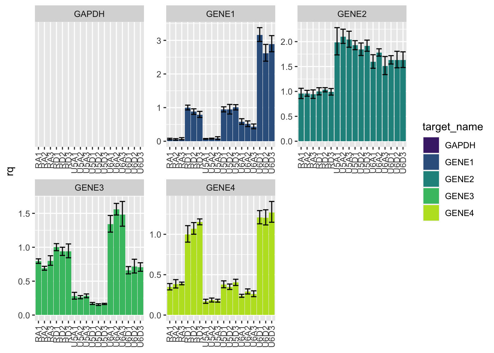
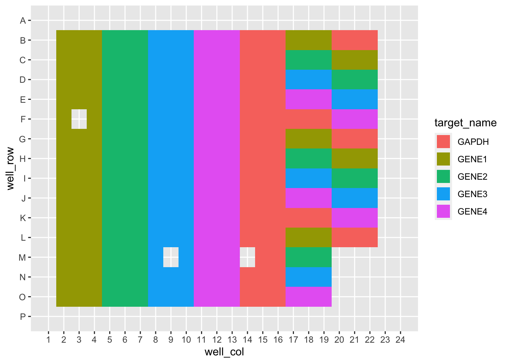
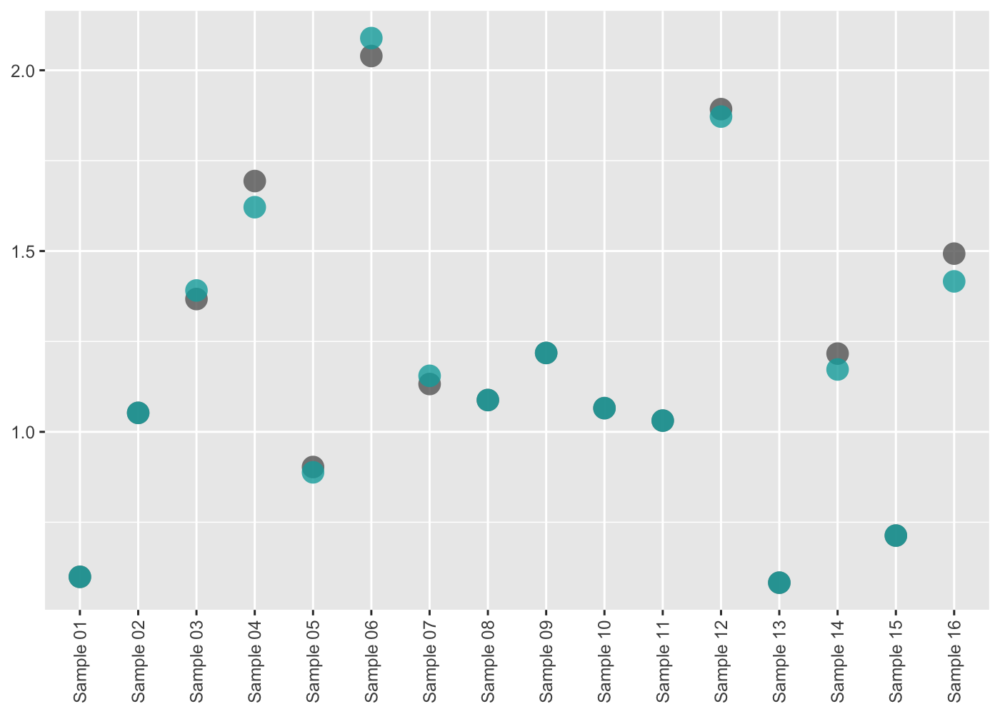

amplify automates routine pcr-based tasks - including plate planning, dilution making, visualizing, and analyzing - so rather than thinking about your experiments themselves, you can think about what your experiments mean.
Installation
You can install this package from GitHub with:
# install.packages("devtools")
devtools::install_github("KaiAragaki/amplify")Tidying qPCR data
Data exported from QuantStudio is fairly non-standard:
untidy_file_path <- system.file("extdata", "untidy-pcr-example.xls", package = "amplify")
untidy_file_path |>
read_excel() |>
select(1:10) |>
head()
#> New names:
#> * `` -> ...3
#> * `` -> ...4
#> * `` -> ...5
#> * `` -> ...6
#> * `` -> ...7
#> * ...
#> # A tibble: 6 × 10
#> `Block Type` `384-Well Block` ...3 ...4 ...5 ...6 ...7 ...8 ...9 ...10
#> <chr> <chr> <chr> <chr> <chr> <chr> <chr> <chr> <chr> <chr>
#> 1 Calibration … Yes <NA> <NA> <NA> <NA> <NA> <NA> <NA> <NA>
#> 2 Calibration … 01-13-2020 <NA> <NA> <NA> <NA> <NA> <NA> <NA> <NA>
#> 3 Calibration … Yes <NA> <NA> <NA> <NA> <NA> <NA> <NA> <NA>
#> 4 Calibration … 01-13-2020 <NA> <NA> <NA> <NA> <NA> <NA> <NA> <NA>
#> 5 Calibration … Yes <NA> <NA> <NA> <NA> <NA> <NA> <NA> <NA>
#> 6 Calibration … 01-13-2020 <NA> <NA> <NA> <NA> <NA> <NA> <NA> <NA>amplify provides pcr_tidy to automatically tidy these files:
tidy_pcr <- untidy_file_path |>
pcr_tidy()
tidy_pcr |>
select(1:10) |>
head()
#> # A tibble: 6 × 10
#> well well_position omit sample_name target_name task reporter quencher
#> <chr> <chr> <lgl> <chr> <chr> <chr> <chr> <chr>
#> 1 26 B2 FALSE RD1 GENE1 UNKNOWN FAM NFQ-MGB
#> 2 27 B3 FALSE RD1 GENE1 UNKNOWN FAM NFQ-MGB
#> 3 28 B4 FALSE RD1 GENE1 UNKNOWN FAM NFQ-MGB
#> 4 29 B5 FALSE RD1 GENE2 UNKNOWN FAM NFQ-MGB
#> 5 30 B6 FALSE RD1 GENE2 UNKNOWN FAM NFQ-MGB
#> 6 31 B7 FALSE RD1 GENE2 UNKNOWN FAM NFQ-MGB
#> # … with 2 more variables: quantity <dbl>, quantity_mean <dbl>pcr_tidy works with both ddCt or standard curve result files.
Plotting qPCR results
Tidied results can be plotted using pcr_plot

Additionally, overviews of plate features can be done using pcr_plate
tidy_pcr |>
pcr_plate_view("target_name")
More details can be found in the Analyzing ddCt qPCR with amplify vignette.
Library Preparation Quantification
Library Preparation Quantification Calculation
RNA library preparation results output from Quantstudio can be tidied using pcr_tidy:
untidy_lib_path <- system.file("extdata", "untidy-standard-curve.xlsx", package = "amplify")
tidy_lib <- pcr_tidy(untidy_lib_path, pad_zero = TRUE)
tidy_lib |>
select(1:10) |>
head()
#> # A tibble: 6 × 10
#> well well_position omit sample_name target_name task reporter quencher
#> <chr> <chr> <lgl> <chr> <chr> <chr> <chr> <chr>
#> 1 1 A1 FALSE Standard 01 Target 1 STANDARD FAM NFQ-MGB
#> 2 2 A2 FALSE Standard 01 Target 1 STANDARD FAM NFQ-MGB
#> 3 3 A3 FALSE Standard 01 Target 1 STANDARD FAM NFQ-MGB
#> 4 5 A5 FALSE Sample 01 Target 1 UNKNOWN FAM NFQ-MGB
#> 5 6 A6 FALSE Sample 01 Target 1 UNKNOWN FAM NFQ-MGB
#> 6 8 A8 FALSE Sample 09 Target 1 UNKNOWN FAM NFQ-MGB
#> # … with 2 more variables: ct <dbl>, ct_mean <dbl>Calculating the concentration of library (before dilution) can be performed using pcr_lib_calc:
calc_lib <- pcr_lib_calc(tidy_lib)
calc_lib |>
select(task, sample_name, concentration) |>
head()
#> # A tibble: 6 × 3
#> # Groups: task [2]
#> task sample_name concentration
#> <chr> <chr> <dbl>
#> 1 STANDARD Standard 01 NA
#> 2 STANDARD Standard 01 NA
#> 3 STANDARD Standard 01 NA
#> 4 UNKNOWN Sample 06 2039.
#> 5 UNKNOWN Sample 06 2039.
#> 6 UNKNOWN Sample 06 2039.Library preparation quantification quality control
We can generate useful plots to determine the quality of the quantification run by first using pcr_lib_qc:
qc <- calc_lib |>
pcr_lib_qc()
lapply(qc, head, n = 3)
#> $standards
#> # A tibble: 3 × 19
#> # Groups: sample_name [1]
#> sample_name task quantity_mean concentration quantity quant_actual dil
#> <chr> <chr> <dbl> <dbl> <dbl> <dbl> <dbl>
#> 1 Standard 01 STANDARD NA NA 6.80 6.80 0
#> 2 Standard 01 STANDARD NA NA 6.80 6.80 0
#> 3 Standard 01 STANDARD NA NA 6.80 6.80 0
#> # … with 12 more variables: slope <dbl>, efficiency <dbl>, r2 <dbl>, ct <dbl>,
#> # no_po_mean <dbl>, no_po_sd <dbl>, keep <lgl>, keep_temp <lgl>,
#> # mean_adj <dbl>, sd_adj <dbl>, quant_adj <dbl>, z <dbl>
#>
#> $samples
#> # A tibble: 3 × 19
#> # Groups: sample_name [1]
#> sample_name task quantity_mean concentration quantity quant_actual dil
#> <chr> <chr> <dbl> <dbl> <dbl> <dbl> <dbl>
#> 1 Sample 06 UNKNOWN 2.04 2039. 2.06 2.06 NA
#> 2 Sample 06 UNKNOWN 2.04 2039. 2.12 2.12 NA
#> 3 Sample 06 UNKNOWN 2.04 2039. 1.94 1.94 NA
#> # … with 12 more variables: slope <dbl>, efficiency <dbl>, r2 <dbl>, ct <dbl>,
#> # no_po_mean <dbl>, no_po_sd <dbl>, keep <lgl>, keep_temp <lgl>,
#> # mean_adj <dbl>, sd_adj <dbl>, quant_adj <dbl>, z <dbl>
#>
#> $sample_summary
#> # A tibble: 3 × 3
#> sample_name quantity_mean quant_adj
#> <chr> <dbl> <dbl>
#> 1 Sample 01 0.599 0.599
#> 2 Sample 02 1.05 1.05
#> 3 Sample 03 1.37 1.39
#>
#> $standard_summary
#> # A tibble: 3 × 4
#> sample_name dil quantity_mean quant_actual
#> <chr> <dbl> <dbl> <dbl>
#> 1 Standard 01 0 6.80 6.80
#> 2 Standard 02 9.27 0.680 0.734
#> 3 Standard 03 12.2 0.0680 0.0603
#>
#> $outliers
#> # A tibble: 3 × 19
#> # Groups: sample_name [1]
#> sample_name task quantity_mean concentration quantity quant_actual dil
#> <chr> <chr> <dbl> <dbl> <dbl> <dbl> <dbl>
#> 1 Standard 01 STANDARD NA NA 6.80 6.80 0
#> 2 Standard 01 STANDARD NA NA 6.80 6.80 0
#> 3 Standard 01 STANDARD NA NA 6.80 6.80 0
#> # … with 12 more variables: slope <dbl>, efficiency <dbl>, r2 <dbl>, ct <dbl>,
#> # no_po_mean <dbl>, no_po_sd <dbl>, keep <lgl>, keep_temp <lgl>,
#> # mean_adj <dbl>, sd_adj <dbl>, quant_adj <dbl>, z <dbl>These data, by themselves, are not particularly useful. However, a suite of QC plotting functions can be used upon these data to give insight, such as:
qc |> pcr_lib_qc_plot_conc()
All QC plotting functions can be run and generate a report using pcr_lib_qc_report.
qc |> pcr_lib_qc_report("path/to/my/report.html")More information about the plots available, as well as their interpretations, can be found in Performing Library Quantification QC